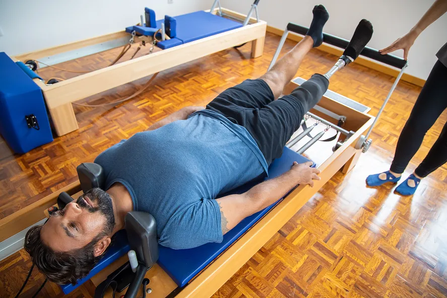
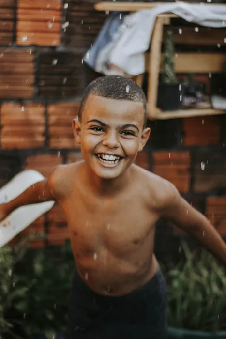
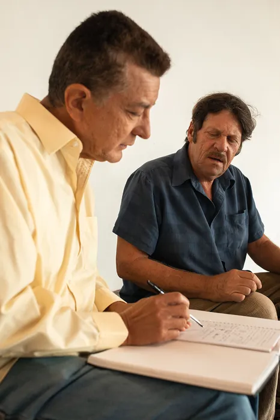
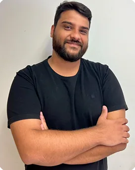

Acolher
Tudo começa pela escuta. Criamos um ambiente seguro e respeitoso para compreender cada pessoa além daquilo que a trouxe até nós.
No Instituto MAIS, diferentes especialidades trabalham juntas para oferecer um cuidado humano, atento e individualizado em cada etapa da vida.
Acolher Desenvolver Transformar
O jeito MAIS de cuidarO Instituto MAIS nasceu com o propósito de criar um ambiente onde acolhimento, desenvolvimento e bem-estar caminham juntos.
Reunimos profissionais de diferentes áreas para oferecer um acompanhamento próximo e individualizado, respeitando a história, as necessidades e o momento de cada pessoa.
Mais do que reunir especialidades em um mesmo endereço, buscamos construir um espaço de confiança — para crianças, adolescentes, adultos e famílias encontrarem apoio para se desenvolver e viver com mais qualidade.
Conheça o Instituto MAISAcolhimento, desenvolvimento e bem-estar caminham juntos.
Três movimentos que orientam cada atendimento, do primeiro contato ao acompanhamento contínuo.
Tudo começa pela escuta. Criamos um ambiente seguro e respeitoso para compreender cada pessoa além daquilo que a trouxe até nós.
Cada processo tem seu próprio ritmo. O acompanhamento é pensado a partir das necessidades e possibilidades de cada pessoa.
Pequenos avanços podem gerar grandes mudanças. Nosso trabalho busca contribuir para mais autonomia, equilíbrio e qualidade de vida.
Cada pessoa chega até nós com uma história e uma necessidade diferente. Por isso, o Instituto MAIS reúne profissionais de diferentes áreas, permitindo encontrar o acompanhamento mais adequado para cada momento.
Acompanhamento psicológico voltado ao cuidado emocional, autoconhecimento e desenvolvimento.
Acompanhamento das dificuldades e dos processos relacionados à aprendizagem e ao desenvolvimento educacional.
Um espaço de escuta e elaboração para compreender emoções, relações, conflitos e experiências.
Avaliação e acompanhamento de aspectos relacionados às funções cognitivas, emocionais e comportamentais.
Um olhar integrado sobre aprendizagem, cognição e desenvolvimento.

Movimento orientado para promover consciência corporal, mobilidade, fortalecimento e bem-estar.
Técnicas terapêuticas voltadas ao relaxamento, alívio de tensões e cuidado corporal.
Não sabe por onde começar? A gente ajuda você a encontrar o caminho.
Nem sempre uma necessidade está restrita a uma única área. Por isso, quando necessário, os profissionais do Instituto MAIS podem trabalhar de forma integrada, construindo uma compreensão mais ampla de cada caso.
Essa troca entre especialidades permite que cada acompanhamento considere diferentes dimensões do desenvolvimento e do bem-estar, sem perder aquilo que é essencial: a individualidade de cada pessoa.

CriançasAcompanhamento do desenvolvimento emocional, cognitivo e da aprendizagem.
Um espaço de escuta e apoio diante das transformações, desafios e descobertas dessa fase.

AdultosCuidado emocional, desenvolvimento pessoal, saúde cognitiva e bem-estar.
Orientação e acompanhamento para compreender desafios e construir relações mais saudáveis.
Nosso novo espaço foi pensado para oferecer ainda mais conforto, acolhimento e qualidade, criando ambientes tranquilos e preparados para receber nossos pacientes, famílias e parceiros.
Conheça nosso espaçoPor trás de cada especialidade existe um profissional preparado para ouvir, compreender e acompanhar cada processo com atenção.
Psicopedagoga
Psicopedagoga e Ludoterapeuta
Psicóloga
Neuropsicopedagoga

Neuropsicólogo e Psicólogo
Psicanálise e Análise do Comportamento
Psicóloga
Massoterapia
Pilates e Fisioterapia
Se você procura acompanhamento para você ou para alguém da sua família, entre em contato com nossa equipe. Podemos ajudar você a entender qual especialidade é mais adequada para a sua necessidade.